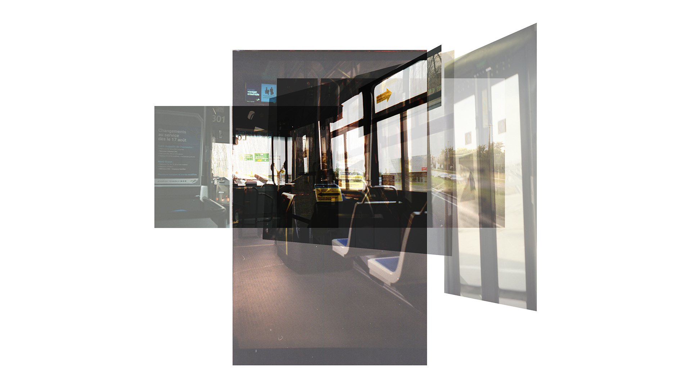
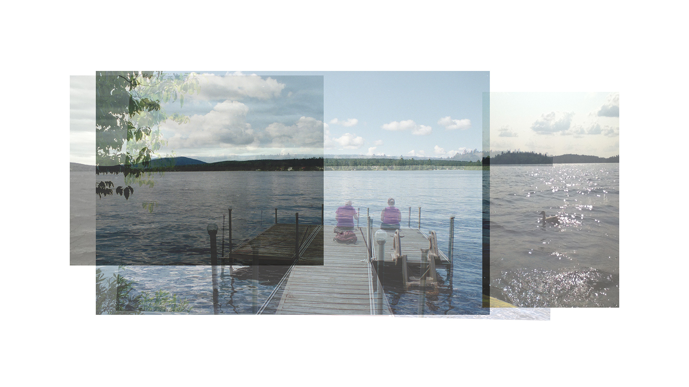
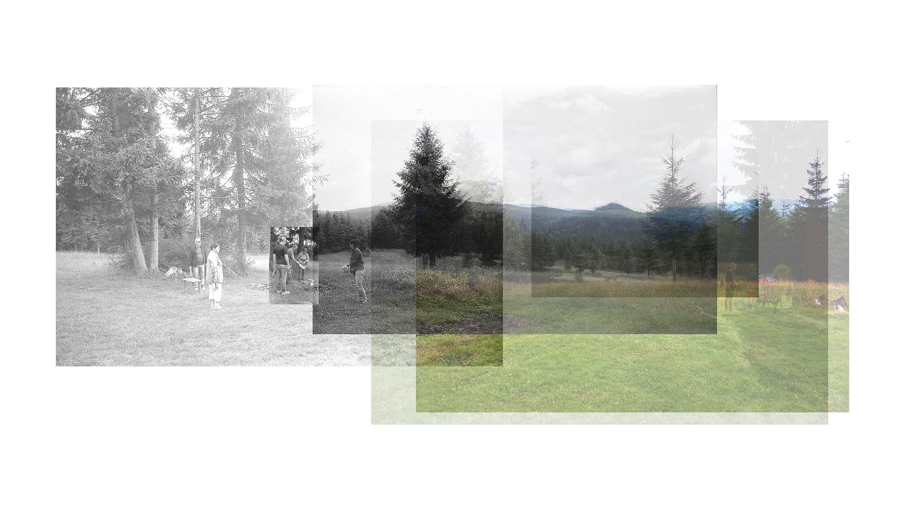

Souvenirs d'école
Souvenirs d'école
La mémoire humaine a la particularité de changer avec le temps: à chaque fois qu'on tente d'éveiller un souvenir, il s'éloigne un peu plus de notre expérience initiale.
Les photographies et les vidéos ont la capacité d'immortaliser des instants. Or, par ce fait même, on commence progressivement à dépendre des photographies pour se rappeler de nos souvenirs préférés.
Déjà-vu est une illustration du pouvoir des images tangibles à nous permettre de recréer le portrait et l'histoire d'un endroit par leur accumulation et leur chevauchement.
Portraits de randonnée
Visages de la rue St-Jean
Retours à la maison
Vignettes du chalet
Le terrain familial